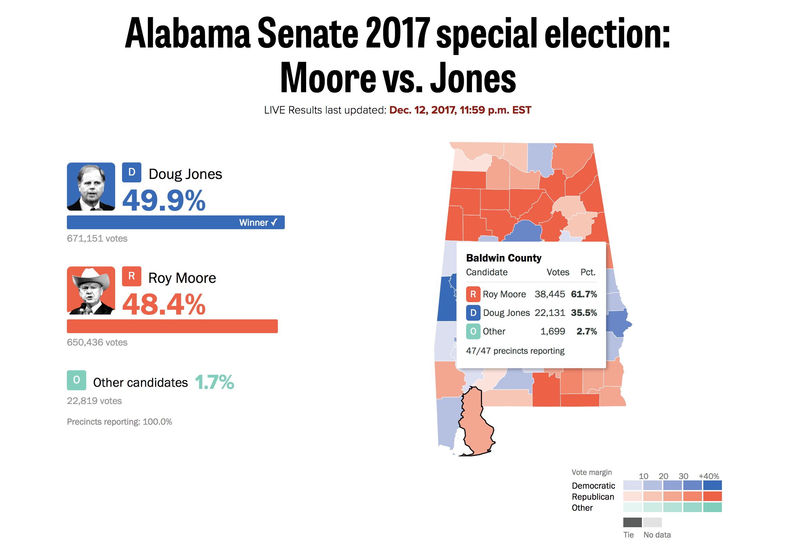
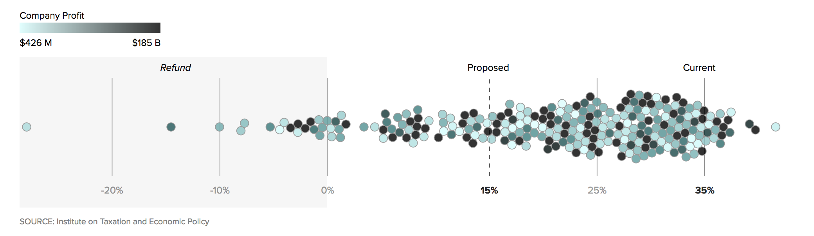
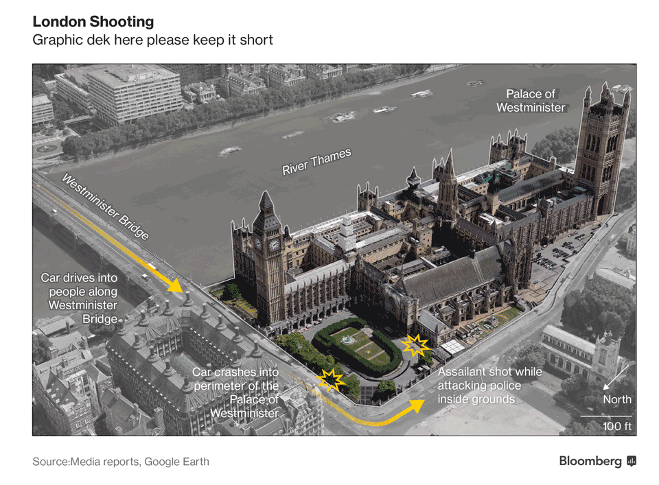

數位轉型下的組織分工以及美國數位敘事趨勢
林辰峰 Jeremy C.F. Lin
我是誰？
Texas Tribune Data Visuals, New York Times Graphics, Washington Post Graphics, Bloomberg Graphics, Current POLITICO interactives
大型Graphics工作內容
NYT, WAPO, Bloomberg(30+人團隊)
與記者合作出產視覺內容3D動畫，包括少數影片
紙板以及網路版
自行產出的視覺與數據導向新聞
與Interactive desk合作做選舉即時開票
大型Graphics workflow
NYT, WAPO, Bloomberg
workflow
You think it's done? HELL NO!

行銷作品與新增資訊
Homepage promo
如何快速將網路與紙板工作流程整合？
D3.js + ai2html + SVG crowbar
新聞室內自製製圖工具：
Mr. Chartmaker, Chartwerk etc
ai2html
載具設計優化
illustrator output -> html網頁
ai2html in action
POLITO interactives
5人團隊，專長互補且都有overlap，均為coder
程式編輯：前Dallas Morning News，當過調查記者，有管理經驗
設計編輯：前LA Times special project editor，專攻UX/UI，news packages
Developer: 前NPR， full-stack，擅長製造工具graphics reporter: 前Vox， 全才類且擅長reporting graphics reporter: 前Bloomberg，沒有專長這就是我，不過我手腳快就是了
新聞室工具: Slack chat
運用現有資源
新聞室工具: Annotation tool
運用現有資源
選舉即時開票與數據分析
仗挑著打
圖像報導
互動新聞
Product

排版
民調分析
設計

資料視覺化
地圖
數據新聞：用社會科學方法做新聞
驗證假說（hypothesis)
推翻讀者既定印象
驗證假說

推翻讀者既定印象

有時候可以兩者結合
總而言之，下次拿到數據時不要一股腦先急著視覺化

數位敘事趨勢
減少互動
社論以及讀者投書視覺化
模板加速產製速度
Climate change
利用視覺元素做調查報導
減少互動
According to Archie Tse from NYT
- If you make the reader click or do anything other than scroll, something spectacular has to happen
- If you make a tooltip or rollover, assume no one will ever see it. If content is important for readers to see, don't hide it
- When deciding whether to make something interactive, remember that getting it to work on all platforms is expensive
減少點擊，若非點不可，必須獎勵豐厚
2012

減少點擊，若非點不可，必須獎勵豐厚
2015

用滾動取代點擊
- Scrolling（往下滾動）符合讀者使用電腦以及手機的習慣
- 沒有讀者喜歡點點去，尤其是當讀者在使用手機時
- Scrolling的線性天性尤其適合新聞內容呈現
延伸閱讀：How to Scroll by Mike Bostock, Responsive scrollytelling best practices
用滾動取代點擊

當滾動成為敘事的一部分
讀者不用停下來去學習，閱讀也不會被干擾

Tooltips減少使用
- 無法手機顯示
- 讀者根本不會點
- 不要將資訊藏在互動裡
先假定讀者不會滑移滑鼠去看隱藏訊息
純平面資料視覺化的再興起
- 手機上顯示迅速
- 較不花時間製作
- 佔用新聞室資源較少
- ai2html
純平面資料視覺化的再興起

用圖表以外的方式製作資料視覺化

社論以及讀者投書視覺化
Editorial

社論以及讀者投書視覺化
OP-ED

社論以及讀者投書視覺化
OP-ED
模板加速產製速度

Climate Change成大媒體兵家必爭之地
Climate Change成大媒體兵家必爭之地
利用視覺元素做調查報導
利用視覺元素做調查報導

Q & A